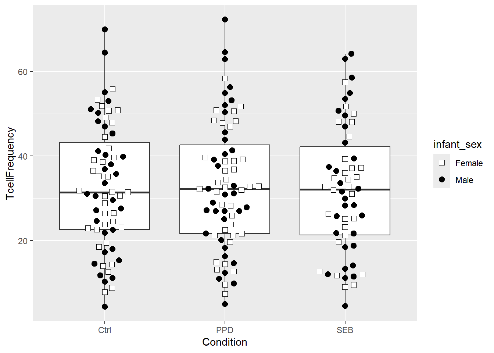
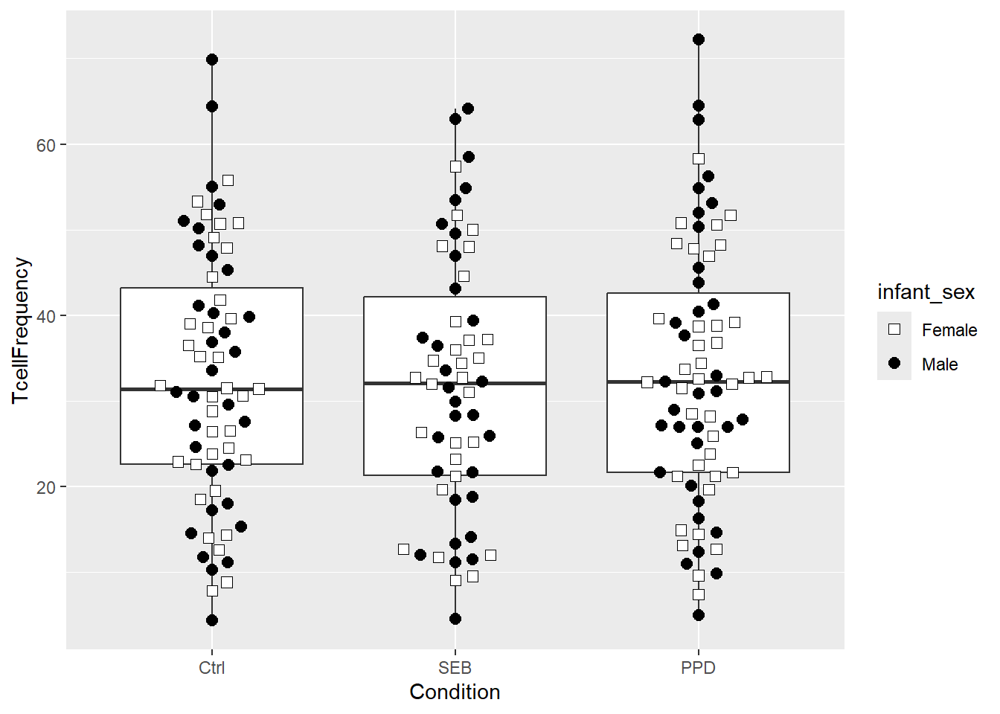
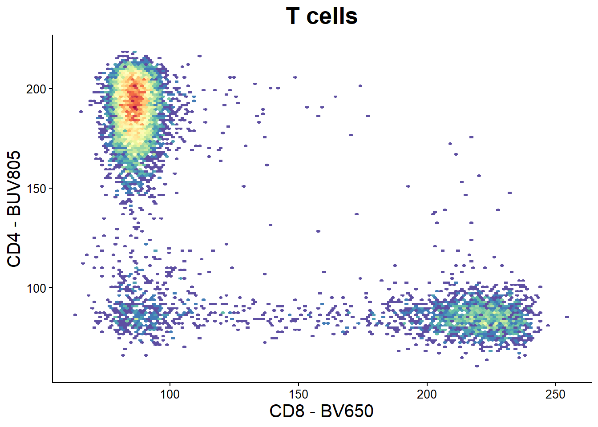
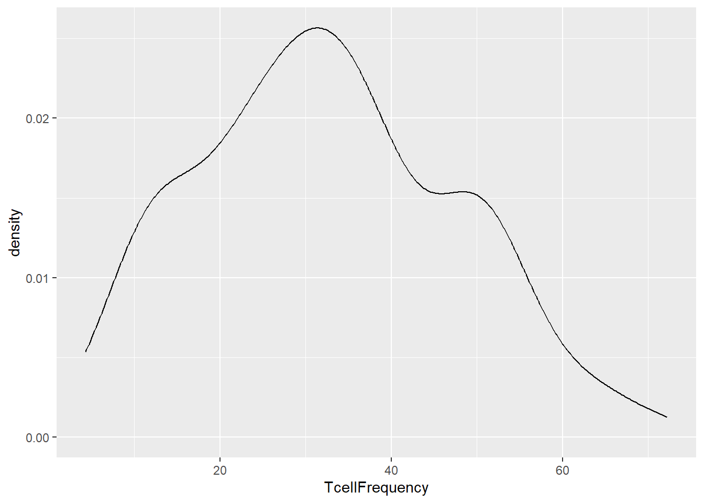
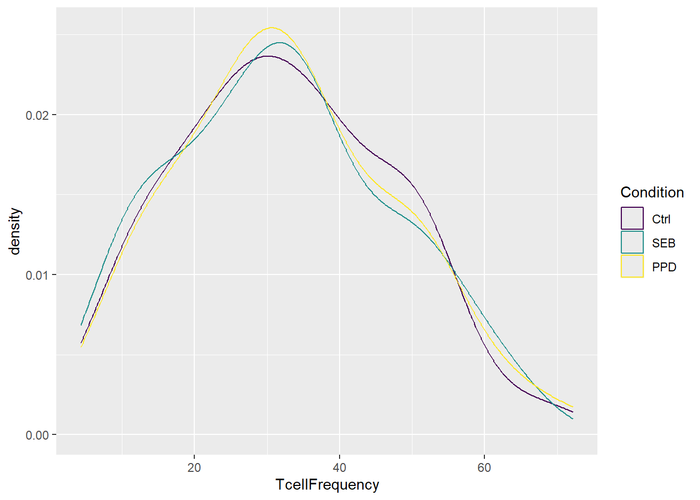
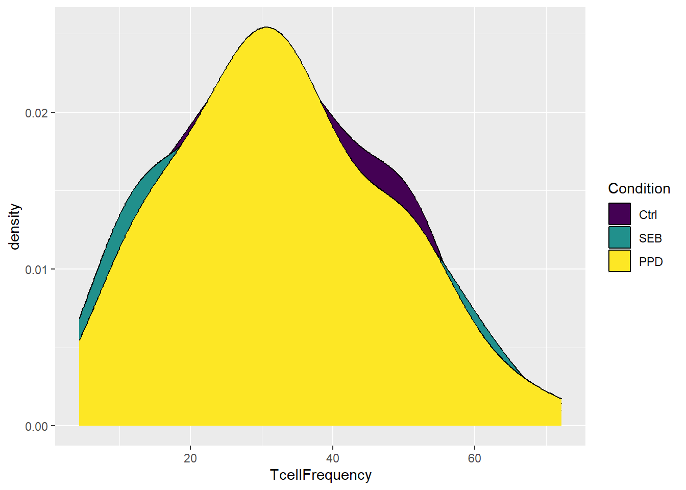

See Course tab for Course Materials, see YouTube tab for livestream recordings
Take home problems week 6
Author
Carlos Cuño
Published
March 17, 2026
Importing data from week 6 lesson
library(dplyr)
Attaching package: 'dplyr'
The following objects are masked from 'package:stats':
filter, lag
The following objects are masked from 'package:base':
intersect, setdiff, setequal, union
library(ggplot2)library(ggbeeswarm)StorageLocation <-file.path("data") # When interactively writing the code TheCSV <-list.files(StorageLocation, pattern=".csv", full.names=TRUE)Data <-read.csv(TheCSV, check.names=FALSE)Data <- Data |>mutate(TcellProportion=Tcells_count/CD45_count) |>mutate(TcellFrequency=TcellProportion *100) |>mutate(TcellFrequency=round(TcellFrequency, 1))
Problem 1
In this session, we created beeswarm-style boxplot to display our T-cell frequencies on the y-axis, and timepoint on the x-axis. Using the concepts covered this week, swap out “timepoint” for the “Condition” variable. Adjust other layer arguments accordingly until you can return a similar plot at the end of the class. Finally, figure out how to switch around the order the Condition values are displayed on the x-axis.
Data$Condition <-factor(Data$Condition) #We transform it into a factorshape_sex <-c("Female"=22, "Male"=21)fill_sex <-c("Female"="white", "Male"="black") #Creating the aesthetics list as in the index fileBSPlot <-ggplot(Data, aes(x = Condition, y = TcellFrequency)) +geom_boxplot() +geom_beeswarm(size=2.5, cex=2.5, aes(shape = infant_sex, fill = infant_sex)) +scale_shape_manual(values = shape_sex) +scale_fill_manual(values = fill_sex)BSPlot #Building and printing the plot as in the index file

To switch the order of Condition, a factor, we need to have a look at the arguments inside the factor function:
?base::factor
starting httpd help server ... done
To change the order, we can define it using the levels argument, and then set the ordered argument to true:
Data$Condition <-factor(Data$Condition, levels =c("Ctrl", "SEB", "PPD"), ordered = T) #We set the new orderOrderedPlot <-ggplot(Data, aes(x = Condition, y = TcellFrequency)) +geom_boxplot() +geom_beeswarm(size=2.5, cex=2.5, aes(shape = infant_sex, fill = infant_sex)) +scale_shape_manual(values = shape_sex) +scale_fill_manual(values = fill_sex) OrderedPlot

Additionally, we could define the order inside the aesthetics of gglot
Circle back to the CytoML-ggcyto flowplot, and modify it until happy with the visual appearance. You may use any resource on the internet to assist, but you must document your steps so that we can also repeat them.
library(CytoML)library(ggcyto)
Loading required package: flowCore
Loading required package: ncdfFlow
Loading required package: BH
Loading required package: flowWorkspace
As part of improvements to flowWorkspace, some behavior of
GatingSet objects has changed. For details, please read the section
titled "The cytoframe and cytoset classes" in the package vignette:
vignette("flowWorkspace-Introduction", "flowWorkspace")
Here I’ll try to use my previous knowledge of ggplot2 (basically the labs and theme functions):
myPlot <-ggcyto(gs[6], subset="Tcells", aes(x="CD8", y="CD4")) +geom_hex(bins=128) +#I believe a power of 2 looks better for some reason (?)theme_classic() +labs(title ="T cells", x ="CD8 - BV650", y ="CD4 - BUV805") +#labs() function allows to change the text on the labeltheme(plot.title =element_text(hjust =0.5, size =20, face ="bold"), #changing the plot title to a bigger and bold font and centering itaxis.title =element_text(size =15), #increasing font size of the axis labelsaxis.text =element_text(size =10), #increasing font size of the axis numbersrect =element_blank(), strip.text =element_blank(), #removing the sample name and the rectanglelegend.position ="none"#removing the legend )myPlot

I will also try to draw a couple of lines to simulate a quad gate (I really don’t know if it’s going to work while I’m writing this)
More or less worked! I have not been able to make them reach the axis though.
Problem 3
In Mismatched Assumptions, we saw two examples of a histogram/density overlay showing the distribution of a variable on the x-axis. Similar to what we did during class to show values according to a different data column, try to modify the plot to show data on the basis of group (whether condition, ptype, infant_sex, etc.) similar to what you can see here.
dPlot <-ggplot(Data, aes(TcellFrequency)) #We assign the Data and the aesthetic layers to an objectdPlot +geom_density() #A normal density plot would look like this

Now, if we want to show the data using different colors for each condition, we need to map this inside the density layer
dPlot +geom_density(aes(colour = Condition))

dPlot +geom_density(aes(fill = Condition))

This works with both colour and fill aesthetics arguments, depending on how we want to do this. Now, we can combine both using our color’s choice and setting the alpha argument so that overlapped lines are actually visible